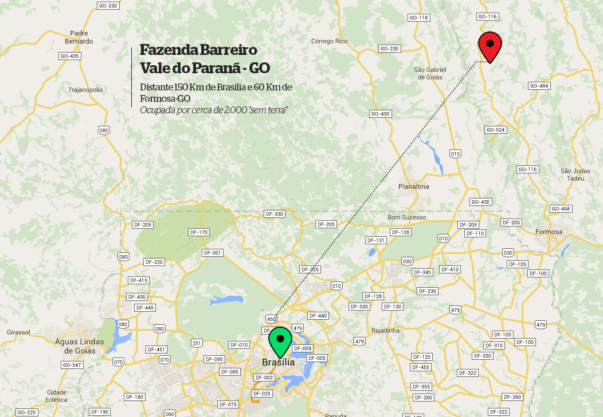
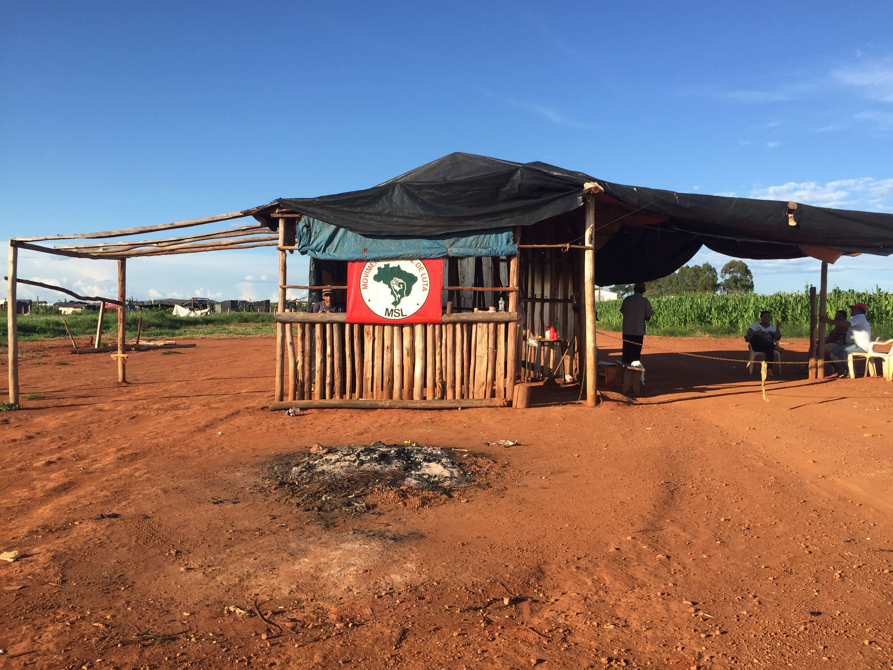

![]()
A retirada de quase dois mil trabalhadores "sem terra" de uma fazenda nas proximidades de Formosa (GO) para a imediata invasão de outra distante 30 quilômetros foi acompanhada com exclusividade pelo Fato Online na madrugada do dia 13 deste mês. Acompanhe o relato do repórter Afonso Morais
Na madrugada fria do Cerrado, uma garoa fina parece querer esfriar os ânimos de quase dois mil sem-terras prontos para invadir mais uma propriedade no interior de Goiás. A tensão pela expectativa de um possível confronto com fazendeiros da região marca o rosto daqueles trabalhadores rurais munidos apenas com pertences pessoais.
O cheiro de barro molhado da estrada completamente escura, a cerca de 30 km de Formosa, mistura-se de tempos em tempos ao aroma do café coado em filtro de pano na cozinha improvisada em uma das duas carretas carregadas com madeiras, lonas e móveis.
Apenas lanternas iluminam o caminho de 300 veículos estacionados ao longo da estrada estreita. Dentro de cada automóvel, crianças, idosos e agricultores ávidos por um pedaço de chão.
O silêncio daquela multidão só é quebrado por breves sussurros de algumas pessoas e pela voz firme do líder do Movimento Social de Luta MSL, Hugo Zaidan. “Só vamos sair no horário tradicional”, avisa.
Passa pouco mais das 2h da manhã quando vem a voz de comando: “Vamos embora”. O som de centenas de motores sendo ligados ao mesmo tempo quebra a monotonia da mata, e os faróis cegam quem insiste em caminhar no fluxo contrário dos carros.
Logo na saída, no entanto, o susto: quatro viaturas policiais e uma caminhonete civil bloqueiam a saída dos sem-terra da propriedade que ocupavam. O objetivo do MSL era sair de uma fazenda diretamente para outra, afinal, havia a necessidade de realocar mais de mil famílias.
Sem entender a presença de policiais militares durante a desocupação da propriedade onde viviam havia dois meses e sob gritos de ordem, Hugo reclama da perseguição por parte de fazendeiros e da polícia e organiza um grupo para negociação. “Nunca vi isso em 20 anos de luta pelo movimento. Estamos cumprindo o que a lei manda, que é desocupar a fazenda”.
O líder do MSL ainda estranha o fato de haver um fazendeiro acompanhando a Polícia Militar. “Só aqui no Goiás que estou vendo fazendeiro junto com a PM nos rodeando para não sairmos de uma área. Não vamos concordar com a inibição que eles estão fazendo. E o que eu vejo que eles querem é um conflito, e isso eu também não vou deixar acontecer”, concluiu.
Assustada, uma senhora de 65 anos (que pede anonimato) fala que teme até pela sua vida. “Esse cerco é de quem quer fazer um massacre”, afirma emocionada.
Diante de dezena de sem-terras, o sargento responsável pela operação, visivelmente assustado com a aproximação de Hugo e de seus liderados, justifica a presença da PM como uma “segurança” aos acampados. “Só viemos aqui para acompanhar a saída de vocês.”
Filho de produtor rural da região, Leonardo Estevão Fernandes acompanha tudo de perto e diz à reportagem que precisa proteger sua fazenda que já havia sido “invadida” pelo mesmo grupo em 2015. Ele afirma ainda que todos os fazendeiros locais estão unidos para impedir o avanço dos sem-terras.
“Não estamos bloqueando as estradas e respeitamos o direito constitucional de ir e vir. Mas já nos unimos e contratamos empresas legalizadas para poder fazer a defesa das fazendas”.
Questionado se havia mais fazendeiros acompanhando a ação, Leonardo avisa: “Quase todos da região. Estão todos nas fazendas e, inclusive, numa fazenda aqui na frente, temos mais de 15 fazendeiros acompanhando o movimento”.
“Aqui não há terra improdutiva”, conclui.
Com a presença dos policiais, a estratégia de ocupação de uma nova propriedade pelo grupo de sem-terras precisa ser revista. Hugo Zaidan, de 33 anos, aproveita a trégua da chuva e reune os coordenadores do MSL ao redor de seu carro para discutir possibilidades.
Às 3h30 da manhã, depois de muita discussão, Zaidan ordena que as carretas liderem o comboio. Os veículos seguem pela rodovia GO-116 até pegar um desvio. Por pouco mais de uma hora, os sem-terras dirigem por uma estrada vicinal em péssimas condições. Alguns carros quebram e ficam pelo caminho até receber ajuda dos companheiros.
A Polícia Militar acompanha pacificamente o comboio. Ao longo do caminho, enquanto o dia começa a raiar, é possível perceber seguranças fortemente armados na porta de algumas fazendas. São as tais “empresas privadas” de segurança mencionadas pelo fazendeiro Leonardo Fernandes.
No fim do trajeto, duas surpresas: a fazenda invadida é justamente a de Leonardo e, mais curioso ainda, a polícia nada faz para impedir a ocupação! Uma viatura, inclusive, estaciona na porteira e os policiais ficam observando os carros entrando, incólumes, pela propriedade que há apenas dois meses foi devolvida ao proprietário por reintegração de posse.
“Eu não sei qual é o entendimento da polícia porque é uma fazenda com reintegração de posse e os policiais não agiram. Eles mesmo retiraram os sem-terra de lá há um mês”, lamenta Leonardo.
Nesta segunda-feira (15), Leonardo falou ao Fato Online que já entrou novamente na Justiça para reaver sua terra. “Já acionei o advogado da fazenda e vamos ver o entendimento do juiz.”
Já o tenente Rodrigues, oficial do 16º Batalhão de Formosa que estava de plantão na madrugada do dia 13 de fevereiro, explicou que não havia o que fazer diante da disparidade entre o efetivo da corporação e o número de "sem-terra".
“Foi uma ação desproporcional. Nesse sentido, visando evitar qualquer confronto, levando em conta a superioridade numérica dos invasores, a gente preferiu não intervir.”
O militar acrescentou ainda que o procedimento institucional correto seguido pela corporação é aguardar a decisão da Comissão de Conflito, em Goiânia. “Todas as partes envolvidas são chamadas para discutir uma desocupação pacífica sem precisar entrar em confronto com a polícia.”
Segundo Rodrigues, os integrantes daquele colegiado decidem por uma data para a saída voluntária dos invasores e acionam os policiais. “Se não saírem na data estipulada, a polícia vai fazer a retirada coercitiva.”
Os fazendeiros, de acordo com o policial, também podem se defender invocando o direito de “esforço imediato”, mas muitas vezes o grande número de integrantes do movimento inibe a ação de seguranças particulares também.
Hugo Zaidan conta ainda que há acampados que têm moradia em centros urbanos e que cobra taxa de ocupação dos companheiros para custear advogado e engenheiro agrônomo para elaborar estudo de terras a serem invadidas
Quase duas horas após ocupar a fazenda Barreiros, a 50 km de Formosa, no estado de Goiás, como mostrou com exclusividade o Fato Online na primeira reportagem da série sobre invasões de terras, o líder do MSL (Movimento Social de Luta), Hugo Daniel Zaidan, aceitou conversar com a reportagem para explicar seus objetivos e motivações para invadir fazendas no interior do país.
Ex-discípulo de José Rainha, líder da FNL (Frente Nacional de Luta), movimento que deixou em dezembro de 2015, Zaidan fundou sua própria sigla para exigir a reforma agrária das autoridades. Foi sob o seu comando que centenas de sem-terras invadiram a sede do Incra no último dia 11 de janeiro, em Brasília.
De acordo com o baiano de 33 anos, o rompimento com o mentor se deu porque Rainha teria abandonado os “companheiros”. “A gente costuma dizer que nunca deixamos os companheiros para trás e, quando veio a ordem que eu tinha que largar os companheiros durante uma liminar de despejo para ir a São Paulo participar de uma reunião, eu fiquei me perguntando o que seria mais importante.”
Depois de criar sua própria bandeira, Hugo já administra 32 acampamentos no interior de São Paulo e, com a invasão da fazenda Barreiros, em Formosa, é responsável por nove acampamentos em Goiás. “Segundo o Incra, o acampamento Nelson Mandela, próximo a São João da Aliança (GO), é o maior da América Latina, com pouco mais de 1.400 famílias cadastradas”, ostenta.
O Fato Online apurou que muitas pessoas com domicílio em cidades como Brasília, Formosa e São João da Aliança estão participando do movimento dos sem-terras. Até servidores públicos participam. Alguns são proprietários de carros em ótimo estado.
Hugo tenta explicar essas contradições: "O sonho de uma terra é muito real em todos aqui, mas às vezes as dificuldades são grandes. Tem pessoas aqui com sete filhos, dois filhos, que não têm casa para alugar nem tem emprego, e o único lugar seguro que elas têm é o acampamento." Ele afirma que a fiscalização sobre a renda do trabalhador é feita pelo Incra. Quem recebe acima de três salário mínimos não pode receber lote.
A estratégia do grupo comandando por Hugo é invadir, em sua maioria, propriedades devolutas, improdutivas e arrestadas pela União por lavagem de dinheiro e fraude. “Os proprietários desonestos que são os verdadeiros ladrões”, condena.
Apesar da pouca idade, Hugo já milita em movimentos sociais há quase 21 anos. Começou aos 13 anos, quando acompanhou a invasão de uma das maiores fazendas de sua região e “se apaixonou pela história” daquela gente simples, segundo ele. Ele começou no MST (Movimento dos Sem Terra) e depois seguiu José Rainha para a FNL.
Hugo admite que há muitos sem-terras que vendem suas terras concedidas pela reforma agrária. Mas ressalta que seria uma falha do Incra e não do movimento. “Quando um assentamento é criado, ele passa a ser da responsabilidade do Incra. Então, essa fiscalização de quem vende o lote é do Incra.”
Sobre a taxa cobrada de cada um dos acampados, Hugo justifica que tudo é revertido para manter a organização e a estrutura do acampamento. Segundo ele, o acampado que mora no acampamento contribui com R$ 15 e quem mora fora, na cidade, paga R$ 30. “Esse valor paga advogado, engenheiro agrônomo, alimentação, escola quando o prefeito nega recursos.”
O maior objetivo é fazer a conquista dessas terras e colocar esses trabalhadores nos seus devidos locais e devolver suas terras de origem como se vem fazendo nos outros estados com os Quilombolas e os indígenas. Aqui é a mesma coisa, a mesma cultura de devolver a história desse Brasil em que cada um deve ter um pedaço de chão.
Comecei lá na minha terra (Bahia), aos 13 anos de idade, onde eu via uma ocupação em uma das maiores fazendas da região e aí me apaixonei pela história e toquei a jornada. E aí a gente vai vendo o sofrimento das pessoas e passei por esse caminho afora até chegar aqui.
Eu estive no estado do Pará depois do (ocorrido no) Eldorado dos Carajás e depois tivemos um contato com a freira Dorothy. Ali naquele exato momento a gente se conheceu e tivemos uma boa jornada junto com a Pastoral da Criança. Quando ela foi assassinada, eu estava ali pela região e, inclusive, naquela semana, a gente tinha tido uma grande conversa. Foi muito triste a situação.
Já o Pontal do Paranapanema, estivemos lá quando houve o massacre. Dali foram desapropriadas 35 fazendas, quando os fazendeiros se uniram. Naquela época, foi a maior história (do movimento) em São Paulo.
Estamos avançando com 32 acampamentos.
Com essa fazenda de hoje, chegamos a nove.
O acampado que mora no acampamento contribui com R$ 15 e o acampado que não mora e que está aqui apenas no final de semana paga R$ 30. Esse valor paga toda essa estrutura e organização, que é advogado, a questão de alimentação quando a gente não tem. A gente mantém a escola quando o prefeito (do município mais próximo ao acampamento) não quer bancar. A gente consegue ter aqui, graças a Deus, todo espaço de ajudar. Agora mesmo temos três companheiros que nós mandamos internar e isto é responsabilidade do acampamento, eles são alcoólatras.
Temos e estamos finalizando estudo da terra nas áreas de São João da Aliança, na área de Alto Paraíso, e fazemos todo estudo por meio desta equipe técnica viabilizada por nós.
Quem foi um aluno dele como a maioria de nós somos, a gente costuma dizer que nunca deixamos os companheiros pra trás. Quando veio a ordem que eu tinha que largar os companheiros aqui durante uma liminar de despejo para ir para São Paulo participar de uma reunião, eu fiquei me perguntando o que seria mais importante.
Eu voltei a ligar para ele e a decisão dele foi uma só: de deixar os companheiros sós. Eu disse para ele que eu tomaria a decisão de não deixá-los e acabou que houve esse desfecho. Tive que ser bem claro com as famílias que nenhuma das áreas das sete áreas ficaria com ele. Todas as famílias ficaram revoltadas porque apostaram que ele estaria aqui até o último momento e, por isso, a gente rompeu essa aliança.
O sonho de ter um pedaço de chão é muito grande. Sou filho de evangélico, a minha mãe é missionária. Vivo a Bíblia que fala história da terra. O sonho de uma terra é muito real em todos aqui, mas às vezes as dificuldades são grandes. Tem pessoas aqui com sete filhos, dois filhos, que não têm casa para alugar nem tem emprego, e o único lugar seguro que elas têm é o acampamento.
E com o desemprego que vai acontecendo hoje vai ter muita mais gente morando no acampamento por causa dessa crise mundial que estamos vivendo.
Agora, a diferença no acampamento é que eu exijo que tem que plantar. Ela faz o cadastro do Incra e, dentro do perfil, é o Incra que classifica por ele ser um servidor público. A lei diz que recebendo mais de três salários mínimos não pode pegar uma terra. Se houve alguma mudança, (na renda) ele (o Incra) tem classificar isso para os acampados.
Vendem e muito! E essa é uma falha do Incra e não do movimento. Quando um assentamento é criado, ele passa a ser da responsabilidade do Incra. Então, essa fiscalização de quem vende o lote é do Incra.
Quem não paga a taxa de ocupação é expulso do acampamento”, conta o major Carlos Eduardo Belelli. Oficial denuncia ainda que invasores usam táticas de guerrilha assimiladas em cursos com guerrilheiros das Farcs.
Os conflitos agrários na zona rural do nordeste goiano vêm despertando a atenção das autoridades federais. De um lado, trabalhadores rurais invadem propriedades com o objetivo de cobrar do governo federal a execução do Programa Nacional de Reforma Agrária. Do outro, fazendeiros cobram uma ação do governo e da Justiça para garantir a integridade de suas propriedades.
No meio dessa disputa, a Polícia Militar de Goiás age para tentar evitar novas invasões e cumprir reintegrações de posse determinadas pela Justiça em nome dos produtores rurais.
“Quando a Justiça determina a retirada desse pessoal, nós retiramos. Só que logo depois eles retornam. Eles não estão afrontando a Polícia Militar, mas a própria Justiça, o desembargador do estado, o juiz, o promotor, o governador. Não tem controle mais isso, a verdade é essa. Há sim risco de um confronto”, desabafa o comandante da 14ª Companhia Independente da Polícia Militar de Alto Paraíso, major Carlos Eduardo Belelli.
Para o militar, os movimentos sociais não estão procurando promover a reforma agrária, mas “vandalismo”. Segundo ele, há diversos crimes sendo cometidos pelos invasores. “Logo percebemos situações ilegais e passamos a investigar. Detectamos indivíduos com passagens criminais e flagramos crimes ambientais e maus tratos a animais, por exemplo”. Belelli alega que prendeu Hugo Zaidan pelo menos três vezes por crime de receptação, ameaça e desacato.
De acordo com cálculos da Polícia Militar, baseados no quantitativo de famílias dos acampamentos que ele controla, a renda mensal de Hugo seria de cerca de R$ 50 mil. “Ele manipula as pessoas e cobra taxa de ocupação. Ele tira, no mínimo, R$ 50 mil aqui na nossa região. E quem não paga ele expulsa do acampamento”, relata.
Outra acusação grave feita pelo comandante é que a Policia Militar teria identificado “táticas de guerrilha” nos acampamentos dos sem terra. “Eles utilizam idosos, crianças e barreiras. Isso é tática de guerrilha colombiana. Já encaminhei aos órgãos competentes informações sobre indivíduos que saíram daqui para fazer curso no interior de São Paulo com guerrilheiros das Farcs”.
Em defesa do major Belelli, o produtor rural Edílson Sousa reconhece a gravidade da situação e diz que, desde a chegada do policial na região, o número de invasões a propriedades privadas e os índices de criminalidade diminuíram drasticamente. A fazenda Nova Era, comprada ainda nos anos 80, para investir na plantação de cana-de-açúcar e no extinto programa do governo federal, Pró-alcool, fica a 28 km de São João da Aliança, no caminho para Alto Paraíso, destino turístico conhecido com a capital da Chapada do Veadeiros e dentro da região de intensa atuação dos movimentos sociais.
“A tragédia é iminente porque vai havendo uma acirração dos ânimos. O risco é grande. E o major Belelli é um herói. Ele vem fazendo um trabalho muito bom e, no dia que ele sair, a confusão vai ser grande”.
Um dos maiores produtores de feijão de Goiás, Edílson está há mais de 30 anos na região e planta ainda soja, milho, trigo e outros insumos. Segundo ele, suas terras são produtivas e empregam 72 funcionários registrados. Mas, com as frequentes invasões, ele já deixou de investir e pretende apenas manter o que já conquistou em três décadas de trabalho.
“A situação é desalentadora. Minha preocupação é permanente e, por isso, parei de investir porque de uma hora para outra a minha fazenda pode ser invadida e a vida da minha família ficar em risco”, lamenta. Segundo ele, tudo por causa do “idealismo de Hugo Zaidan, que acha que está acima da lei”.
Mesmo com tudo isso, Edílson se diz disposto a defender sua propriedade e revela um “pacto de ajuda recíproca” entre os fazendeiros de São João da Aliança e de Formosa. “Se houver uma tentativa de invasão eu vou esperar a solidariedade de todos os fazendeiros, assim como serei solidário com todos dos demais. Afinal, é legal você defender a invasão da sua propriedade”.
Mas antes de partir para o uso da força, o fazendeiro já recorreu à Justiça e conseguiu o interdito proibitório para prevenir a invasão de suas terras.
O ouvidor Agrário Nacional, Gercino Filho, afirma que o ato de invasão de propriedade particular na zona rural “não é crime”; mas alerta que, “se houver crime de desmatamento, matança de animais, destruição de cercas e outros é outra questão”
Baseado em acórdão do Supremo Tribunal de Justiça (STJ), o ouvidor Agrário Nacional, Gercino José da Silva Filho, do Ministério do Desenvolvimento Agrário, afirma que o ato de invasão de propriedade particular na zona rural “não é crime”. “Ocupações de imóveis rurais por trabalhadores rurais sem terra que demandam providências do poder público para fins de reforma agrária não caracterizam crime de esbulho possessório”. O ouvidor se baseia no Acórdão relatado pelo ministro Luiz Vicente Cernicchiaro, referente ao habeas corpus 5.574/SP, de 8 de abril de 1997.
Ele argumenta, no entanto, que advertiu Hugo Zaidan pessoalmente na sede da Ouvidoria e por notificações de que “eles não podem e não devem ocupar imóveis rurais porque esses imóveis não serão vistoriados pelo Incra. Isso porque o artigo 2, parágrafo 6 da Lei 8.629/93, diz que imóvel ocupado não pode ser vistoriado e desapropriado”. Ele acredita que, como Zaidan está ciente de toda a realidade, o líder do MSL estaria “dando um tiro no pé” e haveria motivações políticas por trás dos interesses dos movimentos sociais.
E destaca: “se houver qualquer crime de desmatamento, matança de animais, destruição de cercas e outros é outra questão”.
Responsável pela mediação entre as partes envolvidas, Gercino Filho, em ofício enviado ao governador de Goiás, Marconi Perillo, obtido pelo Fato Online, reconhece a gravidade da situação ao pedir a transferência do major Carlos Eduardo Belelli do nordeste goiano.
A Ouvidoria Agrária Nacional tem a função de prevenir e mediar os conflitos agrários na zona rural. Sua principal finalidade é garantir os direitos humanos e sociais das pessoas envolvidas em conflitos agrários.
De acordo com o documento, o comandante daquela região “não reúne condições de imparcialidade para exercer o seu ofício nos municípios de jurisdição da 14ª Companhia Independente da Polícia Militar”.
“Considerando que o estado de Goiás se coloca em frente a um dilema com o qual não pode mais tergiversar, que é o enfrentamento das questões agrárias, principalmente na região de Alto Paraíso, São João da Aliança, Teresina de Goiás e Cavalcante”, justifica.
Segundo Gercino, nenhuma força policial pode realizar “despejo de trabalhadores rurais sem terra sem ordem judicial, tendo em vista que, a princípio, não ocorre o crime de esbulho possessório” e a retomada da propriedade deve ser de responsabilidade por via legal. Segundo ele, o caminho é conseguir na Justiça uma reintegração de posse.
O ouvidor agrário Nacional, Gercino Filho, é acusado por fazendeiros e pelos policiais daquela região de, ele sim, agir com parcialidade em proteção aos movimentos de sem terra. “O Estado é conivente com a situação. Ele tirou o poder da polícia de agir. Por que as autoridades que deveriam coibir esse tipo de ação, que é o pessoal do Incra e do governo, fazem vista grossa e até incentivam, no caso do Incra”, declara o fazendeiro Edílson Sousa.
O fazendeiro acrescenta que “ele (o ouvidor Gercino) é o fomentador dos movimentos. Isso saindo da boca de um ex-desembargador é lamentável porque o direito à propriedade é constitucional”.
Para o major Belelli, os sem terra burlam a lei. “Sabedores da deficiência da lei, eles invadem hoje, saem amanhã e voltam depois de amanhã. Nós não podemos fazer nada porque, se a gente atuasse, estaria cometendo crime de abuso de autoridade”, lamenta.
Em sua defesa, Gercino entregou à reportagem diversas notificações feitas a Hugo Zaidan, líder do MSL. Em uma delas, do dia 21 de dezembro de 2015, a Ouvidoria notificou o líder dos sem terra, com fundamento em denúncia do representante do proprietário da fazenda Barreiro, Leonardo Fernandes, alvo da ocupação acompanhada com exclusividade pelo Fato Online no último sábado.
De acordo com a denúncia, durante a primeira vez em que invadiram a fazenda, os sem terra cometeram diversas “irregularidades”, tais como: “construíram mil fossas, havendo a possibilidade de contaminar a represa que abastece de água a fazenda; danificaram 8 km de cercas de arame liso, furtaram mobília da sede e furtaram um barco”.
O proprietário, segundo afirma o ouvidor, tem meios legais para evitar a ocupação ou reaver sua propriedade. “Ele deve entrar com os interditos proibitórios na Justiça para que os imóveis não sejam ocupados e, aí sim, a polícia pode atuar porque há uma ordem judicial para não ocupação. O proprietário também pode contratar uma empresa de segurança particular legalizada na Polícia Federal para impedir a ação dos movimentos”.
Gercino também aconselha que o produtor rural recorra à Justiça para determinar que o Incra não vistorie os imóveis ocupados e a retirada o nome dos invasores do cadastro do Incra.
Líder do recém criado MSL (Movimento Social de Luta), Hugo Daniel Maciel Zaidan comanda nove acampamentos montados em fazendas ocupadas nas cidades goianas de Formosa, Alto Paraíso, Teresina de Goiás e São João da Aliança. Segundo ele, todas são terras devolutas como as quatro fazendas de Abib Miguel, ex-diretor da Assembleia Legislativa do Paraná acusado de ser o mentor de esquema de lavagem de dinheiro e formação de quadrilha.
É numa dessas propriedades que o MSL montou o acampamento Nelson Mandela, um dos maiores da América Latina, segundo o Instituto Nacional de Colonização e Reforma Agrária (Incra), com pouco mais de 1.400 famílias cadastradas.
Hoje, de acordo com Hugo Zaidan, depois de muita pressão da Polícia Militar e de uma reintegração de posse realizada de maneira irregular, em dezembro passado, restam apenas cerca de 400 famílias. Hugo nega receber o montante mencionado pelo major Belelli e diz que seus rendimentos estão longe do que afirma o policial, sobretudo depois da reintegração de posse. "Não expulso as pessoas. Mas muita gente deixou o acampamento com medo da polícia e dos fazendeiros. Jogaram até veneno na plantação com um avião e não respeitaram o bem-estar das famílias", reclama.
“Fui preso duas vezes recentemente. Tem um major (Belelli) que vive perseguindo todas as mais de 1.400 famílias cadastradas pelo Incra ali e não só a mim. Isso afeta o psicológico dessas famílias. Essa perseguição é a pior que existe. Ele tem uma estratégia que é me ver preso e a outra é me ver morto como várias ameaças já foram colocadas”, diz Hugo.
O líder vai em frente e revela temer pela própria vida: “ele é uma pessoa que não consegue entender e vai sim, a qualquer momento, haver uma tragédia. Eu já estou me precavendo e busquei as autoridades para avisar que estou sendo perseguido hoje por morte”.
Questionada sobre o posicionamento dos produtores rurais, a CNA (Confederação da Agricultura e Pecuária do Brasil), entidade que representa e defende dos grandes fazendeiros nas três esferas do governo e nos poderes da República, não retornou ao Fato Online até o fechamento da reportagem.
Afonso Morais
Afonso Morais e Lúcio Vaz
Fabrícia Gouveia
Afonso Morais
Alexandre Fonseca e Fabrício Assis